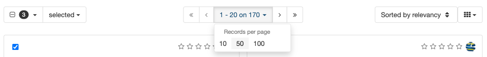

Search records¶
The GeoNetwork catalog provides a data portal listing datasets and resources.
Search Catalogue¶
Enter the desired keywords and search terms into the Search field at the top of the page and use Enter, or the Search button, to list search results.

Search field¶
Search for complete words: Ocean.

Search results for Ocean¶
The wildcard * is used to match the start or end of word: Area*
Keep in mind the entire record contents is searched, not only the titles and description.

Search for start of a word¶
The wildcard * can also be used multiple times to match part of a word: *resea*

Search for part of a word¶
Browse Catalogue¶
The catalog page can be explored using the quick lists of:
Latest news: recently updated records
Most popular: frequently used records
Comments: records with new comments and discussion

Latest news¶
Records are displayed as a block list, large list, or small list using the toggle on the right.
Click on any of the listed records to view.

Large list display of records¶
The catalog page provides a number of quick searches to browse catalog contents:
Use Browse by Topics to explore records based on subject matter.
Use Browse by Resources to explore different kinds of content.
Each option lists « search facets » (shown as small bubbles), click on a « search facet » such as Dataset to explore.

Browse metadata catalogue¶
Clicking on a « search facet » (
Environmentin this example) lists matching records.
Search facet¶
Search Results¶
To further explore listed records:
Use the Filter section on the right hand side to refine your search using additional search facets, keywords, and details such as download format.

Filter results¶
Options are provided along the top to control the presentation of the matching records (as a grid or list) and advance to additional pages of results.
Browse results¶
Advanced search options are located in the … menu next to the Search field at the top of the page. These options can be used to further refine search results by category, keywords, contact or date range.

Advanced search options¶
Use the Advanced search options … panel, the drop down for Records created in the last to select
this week.This acts as a short cut to fill in the from and to calendar fields. Press the Search button to filter using this date range.

Records updated in the last week.¶
Note
The
Recorddate filter to only show records with data identification (creation, publication, revision) dates included within the calendar date range.The Resource date filter is not presently used.
To search for records in the year
2012use the advanced search options to fill in:From
2012-01-01
To
2012-12-31
Press Search button to show records from
2012.
Records updated in 2012¶
A slide out map is provided at the bottom of the page, providing visual feedback on the extent of each record.

Search map¶
The map can be controlled by by toggling beween two modes:
Bounding Box: Click and drag to define an extent used to filter records. The drop down controls if the extent is used to list only records that are withing, or all records that intersect.
Pan: Click and drag the map location, using the mouse wheel to adjust zoom level.
Records are selected (using the checkbox located next to each one) to quickly download or generate a PDF of one or more records.

Selected Records¶
Additional tips and tricks with search results:
Details on selecting multiple records and exporting as a
ZIPorPDF.